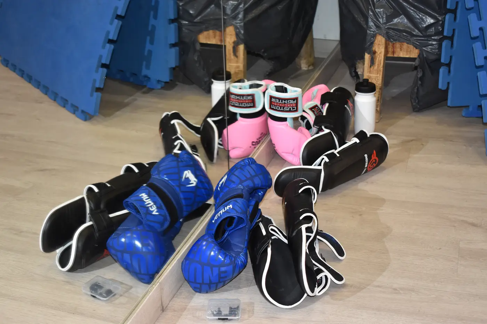
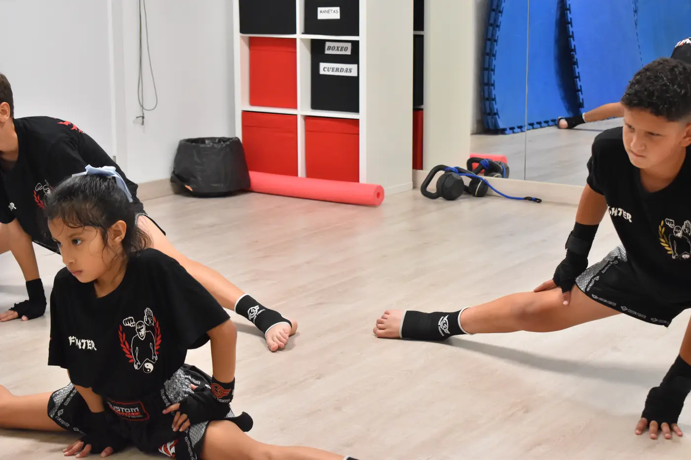
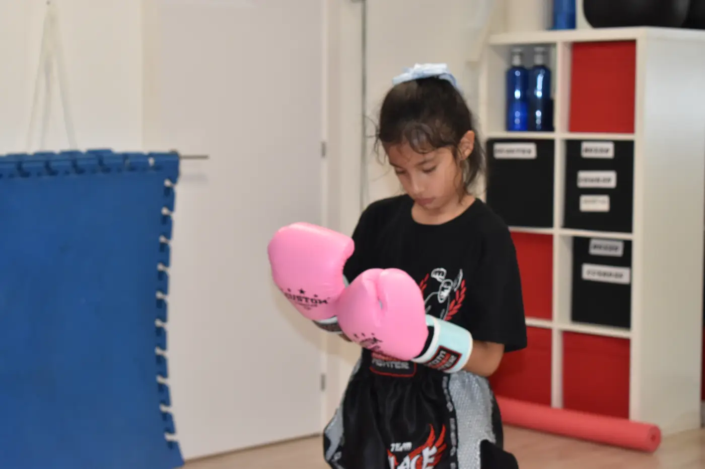
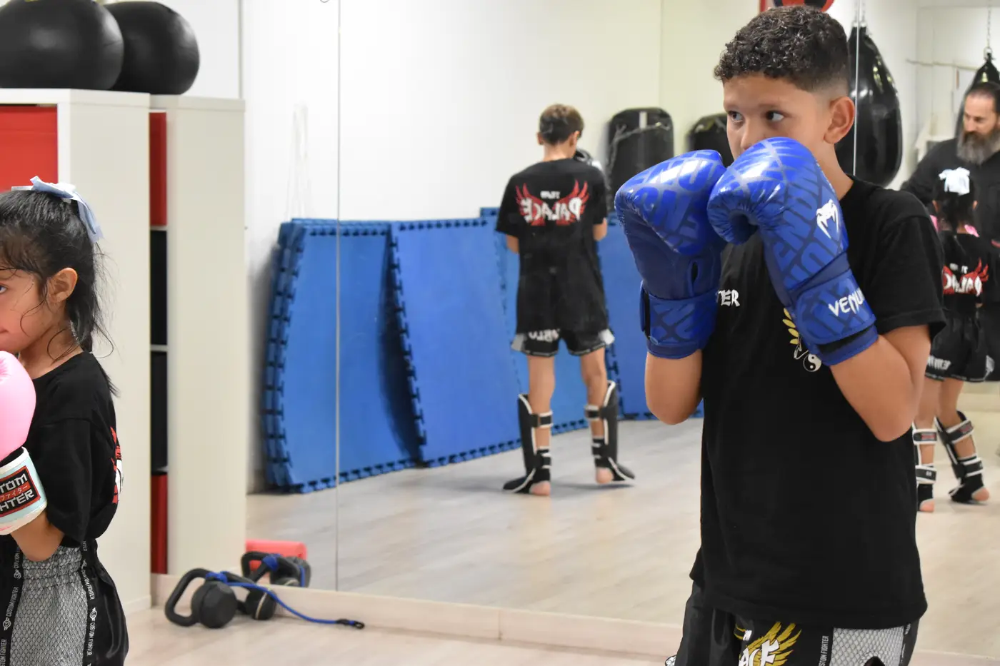
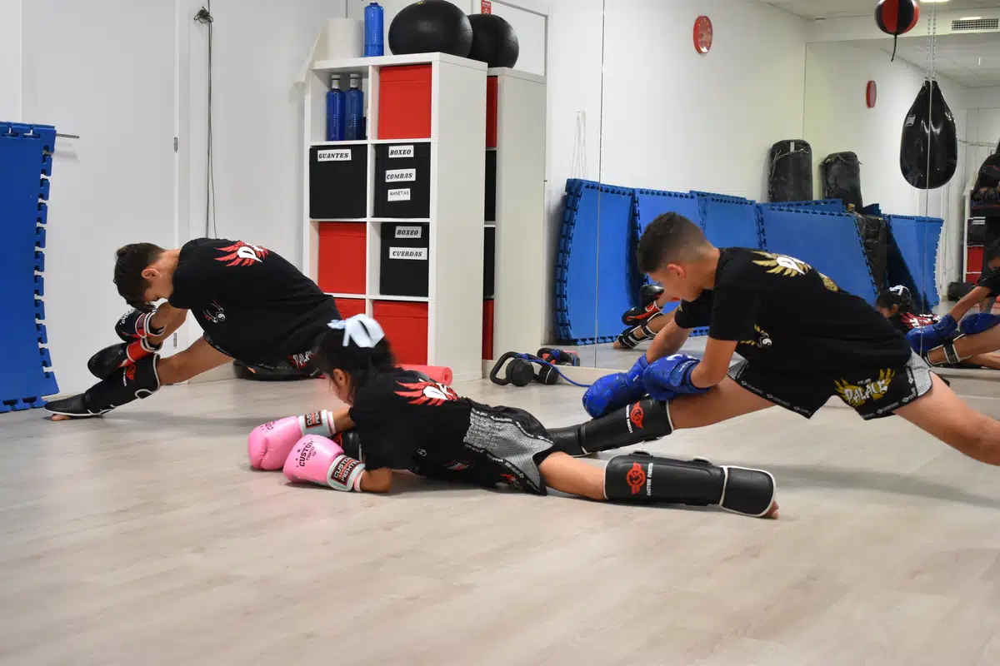

Pilates
Trabajo corporal enfocado en fuerza, movilidad, postura y control.
Actividades de Gym en Leganés para entrenar, moverte y sentirte mejor. Pilates, Zumba y sesiones para mejorar fuerza, movilidad, coordinación, energía y bienestar.
Pilates, Zumba, movimiento y bienestar en un espacio cercano, activo y motivador.
Fuerza y movilidad
Clases de Pilates
Zumba y energía
Horarios mañana y tarde
La sección Gym de Siete Notas está pensada para personas que quieren cuidarse, mejorar su condición física y mantenerse activas de una forma dinámica y acompañada.
Pilates ayuda a trabajar la postura, la fuerza, la movilidad y el control corporal. Zumba aporta ritmo, energía, coordinación y una forma divertida de hacer ejercicio.
Trabajo corporal enfocado en fuerza, movilidad, postura y control.
Clase energética con música, baile y ejercicio cardiovascular.
10:00 - 11:00
11:15 - 12:15
18:00 - 19:00
19:15 - 20:15
20:15 - 21:15
La zona Gym de Siete Notas reúne actividades para mejorar postura, fuerza, movilidad y energía. Pilates, Zumba y clases de movimiento ayudan a entrenar en un ambiente motivador, cercano y adaptado a diferentes niveles.








Trabajo de fuerza, respiración, movilidad y estabilidad para sentirte mejor.
Clases dinámicas para moverse, liberar tensión y disfrutar del ritmo.
Actividad física regular para mejorar bienestar, coordinación y resistencia.
Entrena en un ambiente amable, sin presión y con seguimiento del profesor.
Las clases combinan explicación, práctica, corrección y acompañamiento. La idea es que cada persona se sienta cómoda, pueda preguntar y avance con una estructura clara.
Preparamos cuerpo y articulaciones.
Trabajamos fuerza, ritmo, movilidad o coreografía.
Ajustes técnicos para moverte con seguridad.
Terminamos con calma y recuperación.
Si buscas pilates en Leganés, zumba en Leganés, gym en Leganés, clases de bienestar, movilidad y ejercicio. en Leganés, en Siete Notas te orientamos según edad, nivel, objetivos y disponibilidad.
Solicitar informaciónTe orientamos según edad, experiencia previa, disponibilidad horaria y objetivo personal.
Sí. Muchas actividades cuentan con niveles de iniciación y grupos adaptados.
Pilates se enfoca más en postura, fuerza y control; Zumba es más cardiovascular, musical y dinámica.
No. Puedes empezar de forma progresiva según tu nivel.
Sí, puedes consultar qué horarios encajan para combinar Gym con danza, música u otras actividades.